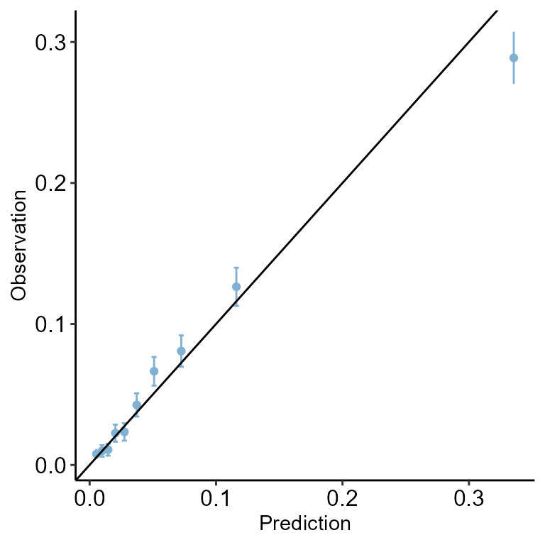
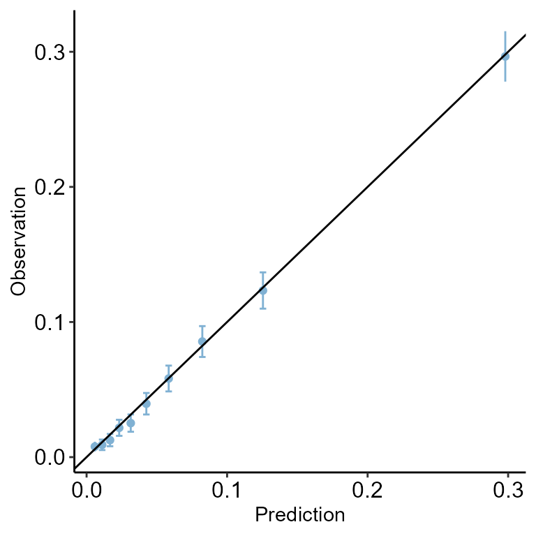
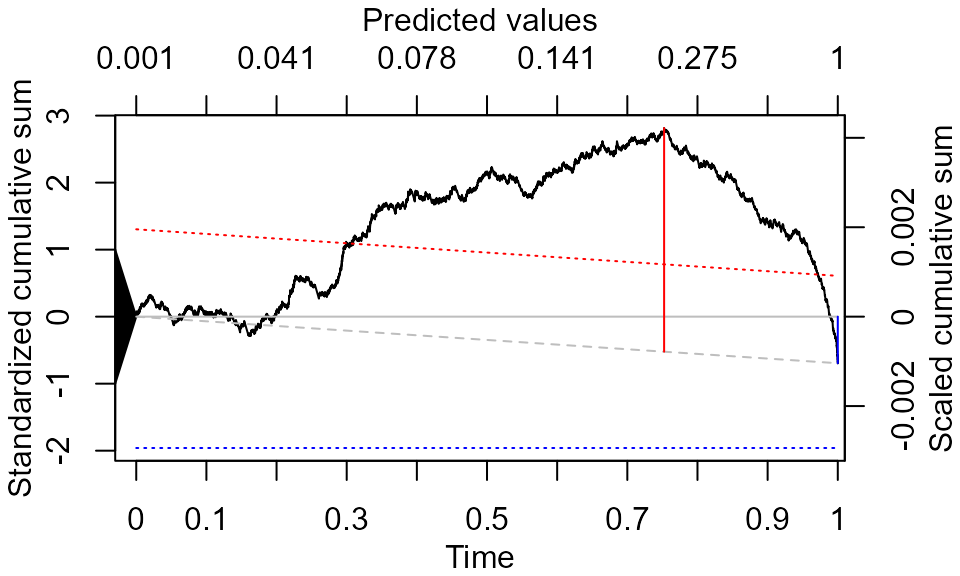
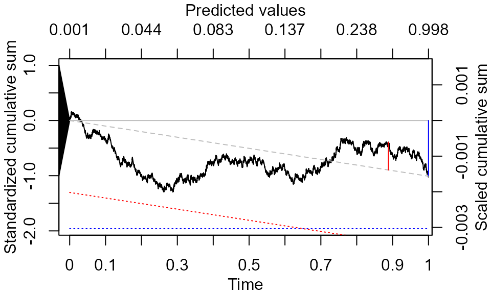

cumulcalib.RmdThis vignette demonstrate how to assess model calibration using the cumulative calibration methodology. This is a simple
We first show how to evaluate this in general, and the specific features that the cumulcalib package provides.
The idea behind cumulative calibration assessment is simple. The conventional calibration plot is the plot of an estimate of the conditional mean \(f(z)=\mathbb{E}(Y|\pi=z)\) versus \(z\). Evaluating moderate calibration is equivalent to evaluating whether \(f(z)=z\). In the common situation that the \(\pi\)s are generated from a continuous distribution, estimating \(f(z)\) requires regularization (e.g., binning or smoothing). However, one can also examine moderate calibration on the partial sum domain. Consider the partial sums of predictions, \(\sum_{i=1}^{n} \pi_iI(\pi_i \leq z)\), and the corresponding partial sums of responses, \(\sum_{i=1}^{n} Y_iI(\pi_i \leq z)\) , where \(I()\) is the indicator function. It follows immediately from the definition of moderate calibration that under \(H_0\) for all \(z\)s. Evaluating this equality for any fixed \(z\) no longer requires regularization as, after scaling by \(n\), the expectation can be consistently estimated from the data.
The GUSTO-I data are available from the predtools package. Please install this package first.
library(predtools)
#> Warning: package 'predtools' was built under R version 4.3.3
data(gusto)
set.seed(111111)Imagine we have two logistic regression modlesL
gusto$kill <- (as.numeric(gusto$Killip)>1)*1
gusto$Y <- gusto$day30
val_data <- gusto[gusto$regl %in% c(1, 7, 9, 10, 11, 12, 14, 15),]
dev_data_large <- gusto[!gusto$regl %in% c(1, 7, 9, 10, 11, 12, 14, 15),]
dev_data_small <- dev_data_large[sample(nrow(dev_data_large),500,F),]
model1 <- glm(Y ~ age + miloc + pmi + kill + pmin(sysbp,100) + pulse, data=dev_data_small, family=binomial(link="logit"))
model2 <- glm(Y ~ age + miloc + pmi + kill + pmin(sysbp,100) + pulse, data=dev_data_large, family=binomial(link="logit"))
val_data$pi1 <- predict(model1, type="response", newdata=val_data)
val_data$pi2 <- predict(model2, type="response", newdata=val_data)
predtools::calibration_plot(val_data, obs="Y", pred="pi1")
#> $calibration_plot
predtools::calibration_plot(val_data, obs="Y", pred="pi2")
#> $calibration_plot
res1<-cumulcalib::cumulcalib(val_data$Y, val_data$pi1)
res2<-cumulcalib::cumulcalib(val_data$Y, val_data$pi2)
plot(res1)
summary(res1, method="BM")
#> [1] "C_n: -0.00104175180593455"
#> [1] "S_n: -0.695004245405677"
#> [1] "C_star: 0.00421961645987535"
#> [1] "S_star: 2.81511520967912"
#> [1] "B_star: 3.33806872142875"
#> [1] "Method: One-part Brownian Motion (BM)"
#> [1] "Test statistic value: 2.81511520967912"
#> [1] "P-value: 0.00975195002512808"
#> [1] "Location of maximum drift: 21623 | time value: 0.752446499725158 | predictor value: 0.231769680615466"
plot(res2)
summary(res2, method="BM")
#> [1] "C_n: -0.00156276638623442"
#> [1] "S_n: -1.00908104947695"
#> [1] "C_star: 0.00200906446334097"
#> [1] "S_star: 1.29725651574825"
#> [1] "B_star: 1.02844827843831"
#> [1] "Method: One-part Brownian Motion (BM)"
#> [1] "Test statistic value: 1.29725651574825"
#> [1] "P-value: 0.388886850369088"
#> [1] "Location of maximum drift: 15245 | time value: 0.287796643081863 | predictor value: 0.0603447711748232"